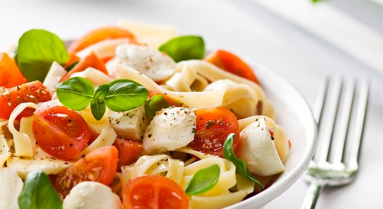

<section id="menuu1_hommikusook2" class="centered frame">
				<section class="me title">
					
					<h3>HOMMIKUSÖÖK</h3>
					<div class="clear"></div>
				</section>
				
				<section class="toscroll">
				
					
					<section class="text_item f3bg" >
						<div class="text_wrap75">
							
								<h4>2 variant</h4>
								<p>Sama puder aga soolane võiga + 2 keedumuna, juurde 1 täisteraleib fileesingiga.</p>
								<p>Klaas keefirit.</p>

							
								<span class="touchslider-prev teleport" data-page="menuu1_hommikusook1" data-level="none" ></span>
								<span class="touchslider-next teleport" data-page="menuu1_hommikusook3" data-level="none"></span>
								
						
						</div>
					</section>
					
					
					
					
					<div class="clear"></div>
				</section>
			
			</section> <!-- lisandid -->